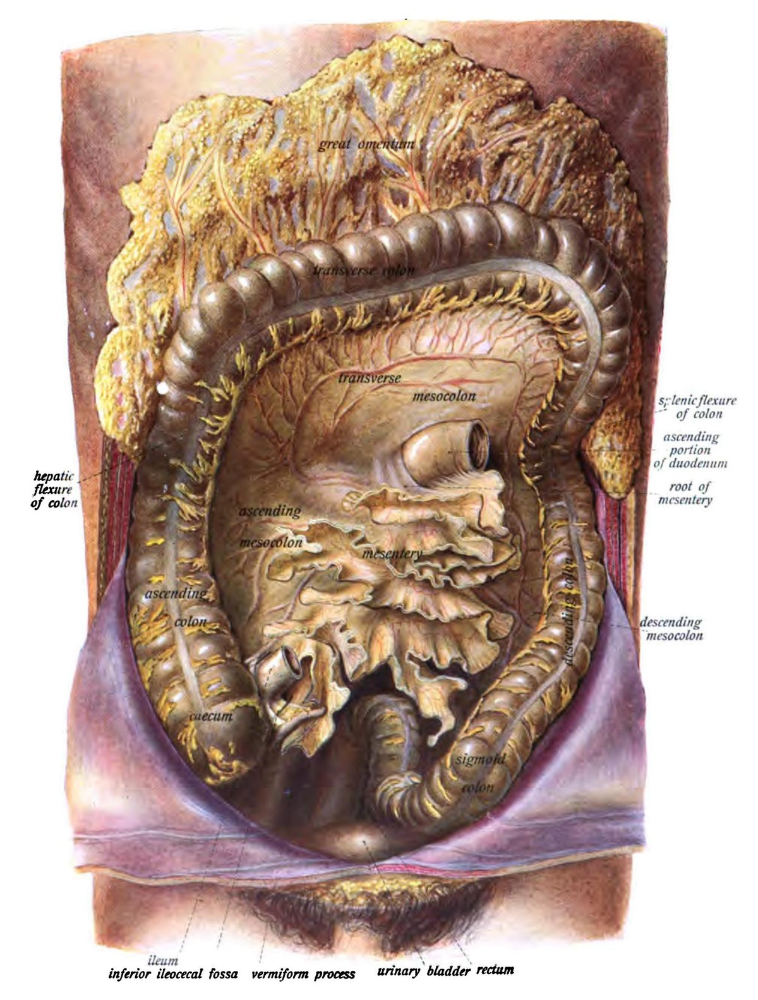

המערך לכירורגיה כלליתהמרכז הרפואי קפלן
סטודנטים · הכנה לשיעור · שבוע 1
קרצינומה של הקולון והרקטום
מה לקרוא, על מה נדבר ומה כדאי לדעת לפני שנפגשים
מבוסס עלSabiston Textbook of Surgery · מהדורה 22
פרק 96
הסבב בכירורגיה · האוניברסיטה העברית
1על מה נדבר
השיעור בשלושה חלקים
1 · מפוליפ לסרטןאיך זה מתחיל, מי בסיכון תורשתי ואיך המטופל מגיע אלינו
2 · בירור וניתוחקולונוסקופיה, CEA, CT ושלב קליני. איזה ניתוח לאיזה מקטע לפי אספקת הדם ומי מקבל טיפול משלים
3 · מקריםשלושה מטופלים: מהמרפאה, מהמחלקה ומהישיבה הרב-תחומית. נחשוב יחד מה עושים בכל שלב
מה מצופה מכםלקרוא לפני השיעור את העמודים שבשקף הבא. בשיעור לא חוזרים על הכול: עובדים על ההחלטות ועל המקרים
Sabiston 22 · פרק 96הכנה לשיעור
2מה לקרוא
הקריאה לשיעור
96פתוגנזה ותסמונות תורשתיות: FAP ולינץ׳עמ׳ 1491–1497
96הסתמנות, בירור, שלב קליני וניתוח לפי מקטעעמ׳ 1497–1500
96חסימה, גרורות באבחנה, טיפול משלים ומעקבעמ׳ 1501–1503
96סרטן ה-rectum: בירור, טיפול לפני ניתוח ו-TMEרשות · עמ׳ 1503–1510
Sabiston 22 · Sabiston Textbook of Surgery, מהדורה 22קריאה
3ידע בסיסי
המילים שנשתמש בהן
- אדנומה מתקדמת: 1 ס״מ ומעלה, דיספלזיה בדרגה גבוהה או מבנה וילוזי
- MMR: מערכת תיקון השגיאות ב-DNA. בודקים אותה בכל ביופסיה של סרטן
- תסמונת לינץ׳: נטייה תורשתית לסרטן מעי גס ולגידולים נוספים, למשל ברחם
- CEA: סמן גידולי בדם. בודקים לפני הניתוח ובמעקב
- TNM: עומק החדירה (T), בלוטות (N) וגרורות (M)
- שלב III: בלוטות חיוביות בלי גרורות מרוחקות. מקבלים כימותרפיה משלימה
- marginal artery: קשת כלי הדם לאורך ה-colon. שומרים עליה כדי שהחיבור לא יהיה איסכמי
- TME: כריתה של ה-rectum יחד עם ה-mesorectum, במישור הנכון
Sabiston 22 · פרק 96 עמ׳ 1492, 1497–1502, 1507ידע בסיסי
4מפה אנטומית
כלי הדם קובעים את הניתוח
- החצי הימני מקבל דם מה-SMA: ileocolic, right colic ו-middle colic
- החצי השמאלי מקבל מה-IMA: left colic וענפי ה-sigmoid
- הבלוטות יושבות לאורך כלי הדם ולכן קשירה גבוהה של הכלי מוציאה אותן
לפני השיעורנסו לצייר לעצמכם את שני העורקים ואת המקטעים שכל אחד מזין. בשיעור נלחץ על כל מקטע במפה האינטראקטיבית

Sabiston 22 · פרק 96 עמ׳ 1497–1500אנטומיה
5בסבב
מה לחפש השבוע במחלקה
במחלקהמצאו מטופל לפני כריתת מעי. קראו את דו״ח הקולונוסקופיה (מיקום, קעקוע, בדיקה שלמה, ביופסיה ו-MMR), את ה-CEA ואת ה-CT
בחדר הניתוחבכריתה, שימו לב לקשירת כלי הדם ולבדיקה של אספקת הדם לפני החיבור
בישיבה הרב-תחומיתאם אפשר, הצטרפו לישיבה. שימו לב איך מחליטים מי מקבל טיפול לפני הניתוח
Sabiston 22 · פרק 96 עמ׳ 1497, 1503–1504בסבב